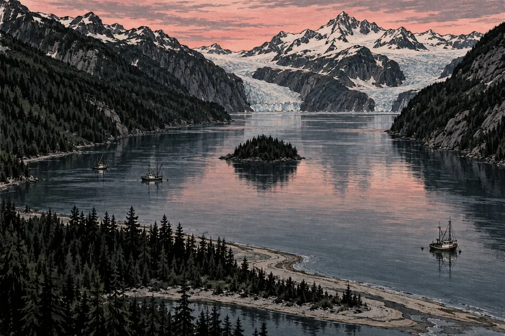

'산 하나가 바다로 무너진 밤, 역사상 가장 높은 쓰나미를 고깃배로 넘은 아빠와 7살 아들'
1958년 7월 9일, 미국 알래스카 남동쪽 끝에 있는 리투야만.
여름 알래스카는 해가 늦게 짐. 밤 10시가 넘었는데도 하늘이 아직 밝았음.
이 만은 생김새가 특이함. 바다 쪽 입구는 좁은 모래톱 사이로 겨우 열려 있고, 안쪽으로 길게 들어가다 끝에서 T자로 갈라짐. 그 양 끝에는 빙하가 바다로 흘러내리고, 뒤로는 눈 덮인 산들이 병풍처럼 서 있음. 만 한가운데에는 숲이 덮인 작은 섬이 하나 떠 있음.
그날 밤 이 조용한 만 안에 고깃배 세 척이 닻을 내리고 있었음.
에드리호에는 하워드 울리크와 7살 아들 소니. 배저호에는 빌·비비안 스완슨 부부. 선모어호에는 오빌·미키 와그너 부부.
다들 하룻밤 자고 다음 날 아침 다시 고기 잡으러 나갈 생각이었음.

좋아요 33
댓글 11
리포스트 1
공유 0